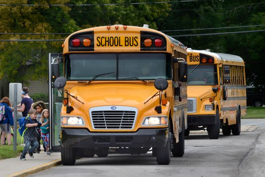
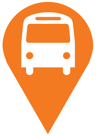

<!--
  Generated template for the MapPage page.

  See http://ionicframework.com/docs/components/#navigation for more info on
  Ionic pages and navigation.
-->
<ion-header>

  <ion-navbar>
    <ion-title>WELCOME!!!</ion-title>
  </ion-navbar>

</ion-header>


<ion-content padding class="abc">
  <div >
    <div id="content" style="height: 50%" >
        <div id="left" class="t" style="width: 50%; float:left">
TRACK 
<br>
YOUR
<br> 
BUS
<br> 
LIVE
<br>
<br>
        </div>
      
        <div id="right" style="width: 50%; float:right">
          <br>
          
        </div>
      </div>
      <br>
      <br>
      <button (click)="studentpage()" ion-button full>Student</button>
      <br>
      <br>

      <button (click)="driverpage()" ion-button full>Driver</button>
      <br>
      <br>

      <button (click)="adminpage()" ion-button full>Admin</button>
      
    </div>
</ion-content>


<ion-footer class="bc">
    <ion-toolbar>
      <ion-title>@skit bus tracker</ion-title>
    </ion-toolbar>
  </ion-footer>